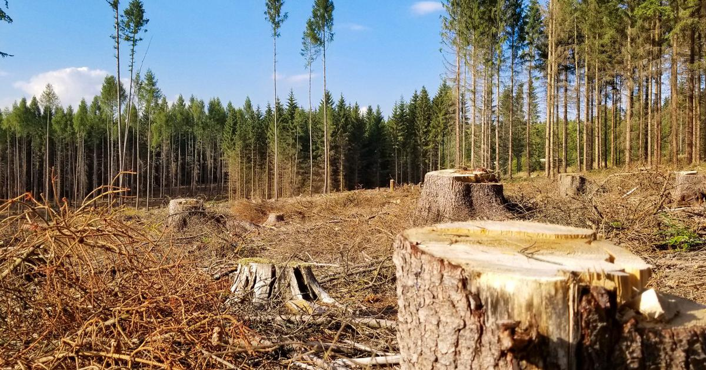
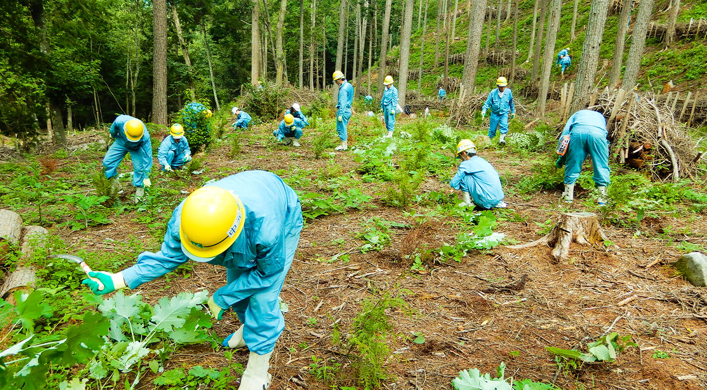
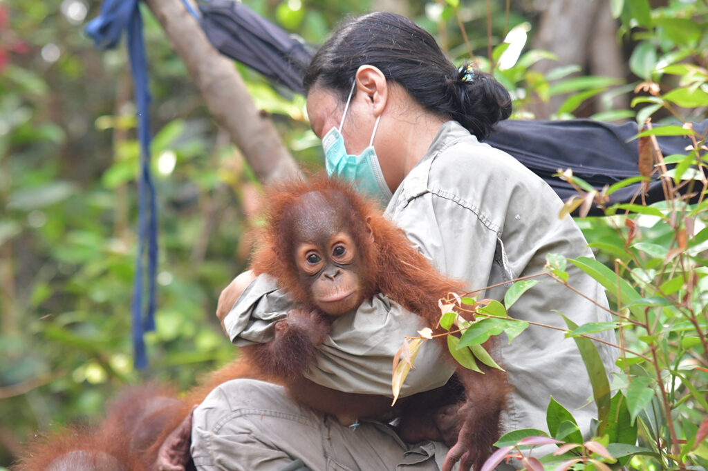

Forests are crucial to the health of our planet. They play a vital role
in regulating the climate by absorbing carbon dioxide, producing oxygen,
and maintaining the water cycle. Forests provide habitat for a diverse
range of species and are essential for biodiversity.
Threats to Forests

Deforestation, climate change, and pollution are major threats to
forests worldwide. These activities lead to habitat destruction, loss of
biodiversity, and contribute to global warming.
Conservation Efforts

Conservation efforts include establishing protected areas, promoting
sustainable forestry practices, and engaging local communities in
conservation activities. Reforestation and afforestation projects are
also critical in restoring degraded forest areas.
Biodiversity in Forests
Forests are home to a vast array of plant and animal species. The rich
biodiversity in forests provides ecosystem services such as pollination,
seed dispersal, and soil formation. Protecting forest biodiversity is
essential for maintaining ecosystem balance.
Protecting Animals on Land

Protecting animals on land is crucial for maintaining biodiversity and
ecosystem health. Many species face threats from habitat loss, poaching,
and climate change. Conservation programs and protected areas are vital
for the survival of endangered species.